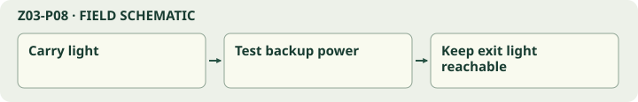

Z03-P08 · Fire and ignition · Adapted historical material
Use a light without combustion
Provide task and signal lighting when a fire is unnecessary.
When it applies · Camp tasks, searching packs or signaling at night.
Equipment · Headlamp or flashlight with spare batteries or independent backup.

Actions
- Carry a working light and spare power. Test the intended brightness and access before nightfall.[E02, ED]
- Keep one light reachable for a nighttime exit. Reserve a second light or spare battery for failure.[E02, ED]
- Use non-combustion lighting inside shelter and keep fuel-burning lights or appliances outside enclosed space.[C05, E02]
Verify · Someone can turn on a backup while the main light is off.[ED]
Stop or change course · When safe movement depends on unavailable light, stop or reroute instead of guessing footing or starting a fire.[E02, T06, ED]
Evidence and editorial notes
- C05 · CPSC · Portable Heaters and Camping Equipment (current web edition)
- Section: Carbon monoxide poisoning from portable camping equipment · Conditions: Tents, campers, vehicles and other enclosed spaces
Support: Fuel-burning camping equipment can lead to fatal carbon monoxide buildup in enclosed spaces.
Limitations: High altitude increases incomplete combustion and CO production. · Conflicting evidence: None; aligns with CDC-CO and NPS guidance.
Editorial note: Hard-stop prohibition against indoor/vestibule/tent combustion. · Specialist reviewer: Carbon monoxide safety and emergency medicine
Primary source · checked 2026-11-24 - E02 · NPS · Ten Essentials (current web edition)
- Section: Navigation; insulation; emergency shelter; emergency food and water · Conditions: Outdoor trips; adjust kit to season and route
Support: Carry essential systems including navigation, insulation, light, water and emergency shelter.
Limitations: Carrying items without practice or cold-weather verification does not ensure readiness. · Conflicting evidence: None; baseline kit system architecture.
Editorial note: Supports failure-mode packing and kit verification cards. · Specialist reviewer: Field education and search and rescue
Primary source · checked 2026-11-24 - T06 · NPS · Outdoor Emergency Plan (current web edition)
- Section: If you get lost or hurt; call for help · Conditions: Outdoor US emergency
Support: Communicate location, last known point, situation and needs. Stay put when unable to establish a safe route unless immediate danger requires movement.
Limitations: Cell signal is unreliable in backcountry terrain; pre-trip plans bridge communication gaps. · Conflicting evidence: None; core lost-person decision rule.
Editorial note: Foundation for stay/signal/move and dispatch handoff cards. · Specialist reviewer: Search and rescue
Primary source · checked 2026-11-24
Source lineage · NPS Ten Essentials and B012 P21 · Classification · Adapted historical material.